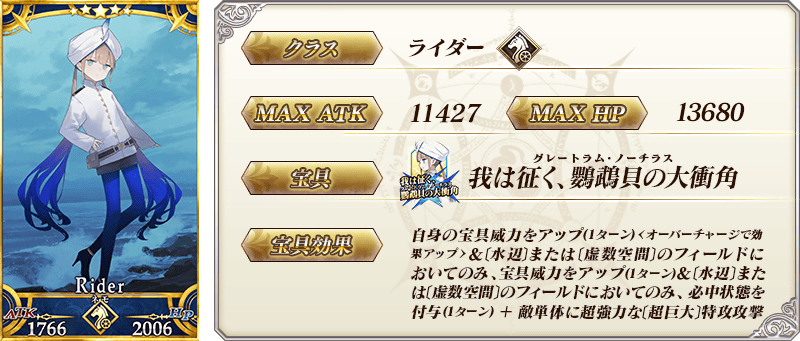
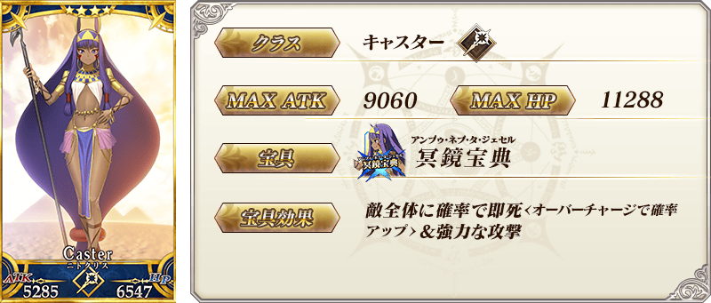
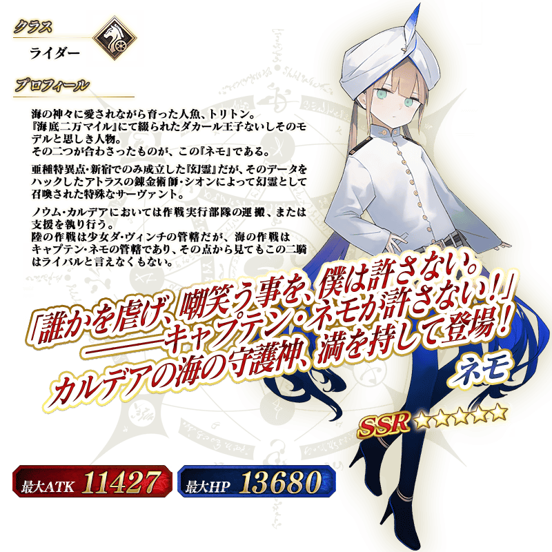

◆『「Lostbelt No.7」(後篇)開幕前夕 尼莫Pick Up召喚』期間◆
期間:2023年1月11日(三) 17:00～1月18日(三) 16:59
從第2部 第7章「Lostbelt No.7 黃金樹海紀行 冥界紀元 統御星球的存在」關聯從者之中「★5(SSR)尼莫」與「★4(SR)尼托克里絲(Caster)」2位Pick Up！

【Pick Up對象】
▼常駐從者
・★5(SSR)尼莫
・★4(SR)尼托克里絲(Caster)
Pick Up期間中，Pick Up對象從者的出現機率提升！
詳情請在聖晶石召喚畫面左下的召喚詳細確認。
11次召喚中確定1張★4(SR)以上和確定1位★3(R)以上的從者！ ※確定★4(SR)以上包含從者和概念禮裝。
自2023年1月2日(一) 23:00，進行調整讓「Pick Up的★4(SR)從者」的出現機率一部份比之前更高。
【重要】
◆「確定召喚」功能について◆
・期間限定Pick Up召喚中，329回以內にPick Up對象★5(SSR)從者召喚されなかった情況、第330次的召喚おこなった際に1度だけPick Up對象★5(SSR)從者必ず1騎「確定召喚」できます。
・同時期に複數的期間限定Pick Up召喚舉辦されている情況は、各召喚個別(召喚畫面的ページごと)に召喚回數カウントされます。另外，每日交替でPick Up召喚的內容切り替わる情況、それぞれ個別に召喚回數カウントされます。一例挙げると、各日0:00的タイミングで召喚內容變更となるPick Up召喚的情況、召喚內容變更された時點で召喚回數的カウント重置されます的で請注意。
・期間限定Pick Up召喚で以下的いずれか的條件満たすと、召喚畫面に「Pick Up對象確定召喚は結束しました。」と顯示され、そ的召喚では「確定召喚」功能無效となります的で請注意。
・第329次までにPick Up對象★5(SSR)從者召喚する
・第330次にPick Up對象★5(SSR)從者確定召喚する
・召喚回數は期間限定Pick Up召喚で有償聖晶石、無償聖晶石、呼符で召喚おこなった際にカウントされます。現在的召喚履歴は該当的召喚畫面內で確認できます。
※10回召喚ごとにおこなわれる「＋1回加成召喚」と、有償聖晶石でおこなえる1日1回限定的「1回召喚」もカウント的對象になります。
※「＋1回加成召喚」と1日1回限定的「1回召喚」的カウントは、召喚內容ごとに個別におこなわれます。
※有償聖晶石1個による「1回召喚」的カウントは、每日4:00にも重置されます。
・11回召喚おこなった際に「確定召喚」功能的條件満たしていた情況、実行している11回召喚中にPick Up對象★5(SSR)從者1騎確定で召喚されます。そ的際、11回召喚で保障されている★4(SR)以上1張確定と★3(R)以上的從者1騎確定は別途有效となります。
・期間限定Pick Up召喚結束後、別的召喚に召喚回數引き継ぐことはできません。
・故事召喚、友情點數召喚は「確定召喚」功能的對象外となります。
◆1日1回限定的有償聖晶石召喚について◆
※1日1回限定で、期間限定召喚有償聖晶石1個で「1回召喚」おこなうことできます。
※有償聖晶石1個による「1回召喚」は、每日4:00に重置されます。
※有償聖晶石1個による「1回召喚」に對應した聖晶石召喚複數ある情況、それぞれ的召喚で1日1回ずつ有償聖晶石1個的「1回召喚」おこなえます。
※有償聖晶石1個による「1回召喚」おこなっても、1回加成まで的カウントに含まれません的で請注意。
※聖晶石購入的際に賦予される「オマケ」は、無償聖晶石となり有償聖晶石的個數には含まれません的で、お間違いないよう請注意。なお、持有している聖晶石的內訳は、持有道具一覧から確認できます。
◆關於透過召喚獲得從者硬幣◆
在期間限定召喚、故事召喚、友情點數召喚中入手從者時，可獲得該從者的從者硬幣。
◆有關從者的注意◆
※下述的從者在Pick Up期間結束後仍會在故事召喚被抽出。
・★5(SSR)尼莫
・★4(SR)尼托克里絲(Caster)
常駐從者

 ※上述「★4(SR)尼托克里絲(Caster)」的卡面為靈基再臨第1階段。

介紹在本召喚Pick Up的「★5(SSR)尼莫」寶具演出！
其他還有期間限定『「Lostbelt No.7 黃金樹海紀行 冥界紀元 統御星球的存在」(後篇)開幕前夕宣傳活動』的情報公開中！
關於詳情，請自下述橫幅確認。
■『「Lostbelt No.7 黃金樹海紀行 冥界紀元 統御星球的存在」(後篇)開幕前夕宣傳活動』詳細情報